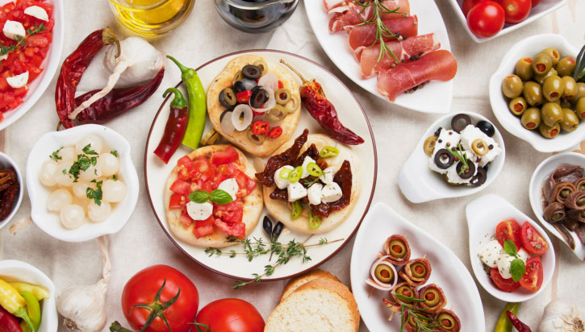
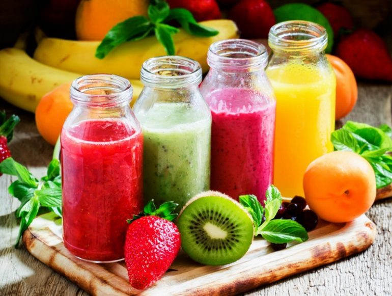

Cocinando
Amantes de la gastronomía
Favoritos


Española Gourmet
16 de noviembre del 2018 Para elaborar esta receta de costillas de cordero con lentejas y espárragos, lo primero que tenemos que hacer es dejar las lentejas en remojo la víspera. Al día siguiente, sofreímos las costillas con un poco de aceite, sal y pimienta. Una vez que estén doradas, las reservamos y desechamos la grasa sobrante. A continuación, doramos las verduras picadas muy menudas, agregamos las especias y las hierbas. Dejamos cocinar hasta que este pochado.

María 22 He aprendido mucho con este blog ya que las recetas están bien elaboradas

Juan_F La cocina ha sido mi pasión desde pequeño y desde que descubrí este blog me he dedicado a practicar más...
Luis 101 La receta con pollo la he practicado pero no me sale bien...
Jugos Naturales
17 de noviembre de 2018 En este artículo compartimos 9 jugos naturales, nutritivos y muy saludables para ayudarte a superar esos males que empeoran nuestra calidad de vida. Hoy en día están muy de moda los batidos y jugos naturales. Se trata de recetas muy saludables que nos permiten consumir una buena cantidad de nutrientes de manera sencilla y placentera.
Angie_M No simpre me han gustado los jugos naturales, pero desde que he probado...
Julieta 21 El jugo de papaya con fresas es mi favorito.
Pamela_L He hecho un par de jugos y ninguna de las recetas me ha gustado.